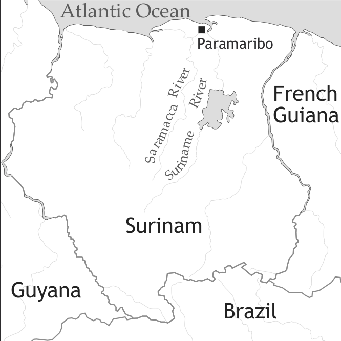

by Enoch O. Aboh and Norval S.H. Smith and Tonjes Veenstra

Saramaccan is a maroon creole language spoken in Surinam.1 Surinam is the smallest mainland South American country, with about 490,000 inhabitants according to the 2004 census. In addition about 350,000 Surinamers live in the Netherlands.
It is one of the two creole languages that have resulted from the various bouts of marronage in Surinam (Nengee being the other, see Migge 2013). Saramaccan dialects are spoken by the Saramaccan and Matawai tribes. Saramaccan and Nengee arouse out of Surinam’s most important plantation creole, Sranan (see Winford & Plag 2013, and van den Berg & Smith 2013).
Surinam was first successfully colonized in 1651 by the English. In 1667 it was assigned to the Dutch by the treaty of Breda under which the Dutch gave up their claim to New York, and the English to Surinam.
Because of the dense tropical forest and the lack of clear landward borders outside the coastal region, marronage was more successful in Surinam than in most other European colonies with slave populations. We will not deal in detail with the long history of marronage in Surinam, but will concentrate on that which gave rise to the Saramaccans and Matawai2.
The study of the processes which gave rise to the creole languages of Surinam in particular is much facilitated by the particular and rapid succession of events. As far as the development of Saramaccan is concerned this is especially so.
A timetable of historical (and hypothesized linguistic) events relevant for Surinam is given in Table 1, based on work by Smith (2002, 2009).
| date | event |
| 1651 | settlement of Surinam by the English |
| ca. 1660 | marronage of Jermes’ group in the Para region |
| 1660–1665 | Sranan creolized from Caribbean Plantation Pidgin English |
| 1665 | Jewish settlers arrive from Cayenne with Portuguese Creole-speaking slaves |
| 1667 | Treaty of Breda by which Surinam was surrendered to the Dutch |
| 1668 | the effective beginning of the Dutch administration |
| 1668–1675 | 80% of the English colonists leave with around 1400 slaves |
| 1675–1680 | partial relexification of Sranan with a Portuguese contact variety to Dju-Tongo (Jews’ Language) on the Middle Suriname River plantations. Dju-Tongo can be equated with Proto-Saramaccan. |
| 1690–1695 | the first mass escapes of slaves to form the Saramaccan tribe, in particular from Jewish plantations |
Jermes’ group of maroons escaped in the English period. They are recorded as attacking plantations in the Para region (de Beet & Sterman 1980). Later they settled on the Coppename River, 60 miles to the west of the Para plantation area. There the Dutch signed a peace treaty with them in 1684/1685. According to de Beet & Sterman, Jermes’ group was known in the 18th century as the “Free Negroes of the Coppename” or Karboegers. They are now represented by the Western Caribs of Surinam. These are known as the Arētïrïpōno or Muraato. The first of these terms means ‘one who is at the west’; the second is the Carib version of Portuguese mulatto, referring to the mixed Carib–African heritage of this group. The important point here is that this group speaks/spoke an Amerindian language and not a creole. This suggests that Sranan had not developed at this point.
Why should Sranan have been formed in the early 1660s? The problem is that both Sranan and Dju-Tongo3 must have come into existence before Dju-Tongo can have been taken into the tropical forest in the period from 1690 onward as the language of the maroons. Placing the formation of Sranan in 1660–65 and of Dju-Tongo in 1675–80 seems to be the solution to the dating of these linguistic events that is least problematic. Both linguistic events were drastic in nature and must have taken place in succession, to judge by the evidence of the Sranan-like linguistic aspects in Saramaccan.
The Portuguese Jewish immigration in 1665 (and also in 1667) cannot be separated from the very significant nature of the Portuguese elements in Saramaccan. Price (1983) links the formation of the Saramaccan Maroon tribe to the Portuguese Jewish-owned plantations around Joden Savannah, the Jewish centre on the middle Suriname River. Direct evidence for this can be seen in the names of important Saramaccan clans such as the Matjáu and Nasí, which are derived from the surnames of Portuguese Jewish plantation owners (in this case Machado and Nassy). That the Portuguese arrived from Cayenne with some slaves is argued for in Smith (1999). The nature of the deep lexical influence of Portuguese on Saramaccan supports the hypothesis that the Portuguese Jews had brought some Portuguese Creole-speaking slaves with them.
In 1667 the Treaty of Breda was signed, which confirmed the Dutch occupation of Surinam and the English occupation of New York. By 1668 the Dutch were firmly in control. This heralded in a period lasting to 1675 during which most of the English colonists left Surinam, taking 1400 or so slaves with them. In previous work the retention of a form of English (if Sranan is regarded as such) after 1675 has sometimes been regarded as problematic. In Smith (2009) this is explained by the probability that koiné English was known to a significant proportion of the slave population till at least 1684. This, we hypothesize, was not their first language, a role filled by the previously creolized Sranan (see Smith 2009 for more on this topic).
We are fortunate in possessing poll-tax returns for 1684 and 1695. Arends (1995) supplies figures for slave imports which show that 9,768 slaves were imported between 1685 and 1695. However the slave population only grew from about 3,650 to 5,100 in this period (allowing for 10% tax evasion, cf. Postma 1990). Allowing for births and deaths, the second figure should have been around 11,350. We are faced with a shortfall of more than half the slave population, in a period that overlaps with that claimed by Price (1983) to be the formative period of the Saramaccan tribe by marronage, 1690–1710 (Smith 2009). This represents proof of an event that is little short of cataclysmic and supports Price’s interpretation of the archival and Saramaccan traditional-historical evidence of the foundation of the Saramaccan tribe.
The sociolinguistic situation of Saramaccan at present is unclear. A significant part of the population has moved away from the original maroon settlements on the Suriname River to three main locations, for different reasons: Paramaribo, the capital of Surinam, for reasons of employment, and as a refuge from the civil war; French Guiana also as a refuge because of the war; and the Netherlands as an emigrant destination.
The numbers of speakers of Saramaccan involved in these various situations are unclear. The figures from the 2004 Surinam census tell us that Maroon languages are spoken as the first language in 18,797 households. The total number of maroons in Surinam was 72,553. Ethnologue (Lewis 2009) gives the number of speakers of Saramaccan as 24,000 (“SIL estimate 1995”). However, since the numbers of speakers of Saramaccan (including the Saramaccan and Matawai tribes) and Nengee (including Ndyuka, Paramaccan (Paamaka), Aluku and Kwinti) are usually stated to be about the same, we can reasonably estimate the total number of speakers of Saramaccan in Surinam to be around 36,000. Ethnologue gives 3,000 as the number of speakers in French Guiana. Choenni & Harmsen (2007) estimate the number of first and second generation maroons in the Netherlands to be 35,000. Of these probably at least 10,000 can be assumed to be speakers of Saramaccan, giving a total number of speakers of at least 50,000.
Little work has been done on internal variation in Saramaccan. Upriver and downriver dialects can be distinguished, as well as a separate Matawai dialect spoken on the Saramacca River.
Saramaccan has seven vowels in a classic triangular system, including close-mid and open-mid vowels. The vowels can all occur short, long, and over-long, with respectively one, two, and three morae respectively. All vowels can also occur in nasalized form.
| front | central | back | |
| close | i | u | |
| close-mid | e | o | |
| open-mid | ɛ | ɔ | |
| open | a |
Examples of the vowel contrast in monomoraic non-nasalized context are given in example (1):
(1)
/i/ sí ‘see’
/e/ té ‘time’
/ɛ/ ɗɛ́ ‘there’
/a/ fá ‘how’
/ɔ/ fɔ́ ‘for’
/o/ gó ‘go’
/u/ tú ‘two’
The consonant system apparently shows dialect variation within Saramaccan. Some dialects appear not to distinguish the labio-velars (/kw/ etc.) from the labial-velars (/kp/ etc.), realizing both types as labial-velars. The distinction can be demonstrated, however, to have existed for more than two hundred years and therefore it is likely always to have been present for some speakers.
A phoneme /hw/ is recognized in a few items like /ahwámáun/ ‘shoulder’.
| labial | alveolar | palatal | velar | labio-velar | labial-velar | glottal | ||
| plosive | voiceless | p | t | tj | k | kw | kp | |
| voiced | b | d | dj | g | gw | gb | ||
| implosive | ɓ | ɗ | ||||||
| nasal | m | n | nj | |||||
| fricative | voiceless | f | s | hw | h | |||
| voiced | v | z | ||||||
| lateral | l | |||||||
| glide | j | w |
Some analysts treat the combinations /mb/, /nd/ and so on as “pre-nasalized” phonemes. This analysis lacks supporting evidence, and it is unnecessary to regard these combinations as anything but clusters. A recent discovery (Haabo 2002) is that Saramaccan distinguishes implosive stop phonemes /ɓ, ɗ/ from ordinary voiced stops. For example, compare the two forms /baí/ ‘buddy’ and /ɓaí/ ‘to brush’.
Saramaccan has been demonstrated by Good (2004) to have a split tone/accent system. In general, polysyllabic words of European (English, Portuguese, Dutch) origin contain a lexical marking for accent. The accented mora (and under certain circumstances, the mora following) is realized with a high tone. Polysyllabic words taken from African (and Amerindian) languages usually have a tone specified on every mora. The non-high tones in “European” words have changeable tones. By default they are assigned a low tone. However, a phenomenon called plateauing acts to raise such non-high tones to high in certain phrasal contexts when they are situated between two high tones in adjacent words. This makes clear that these changeable tones are not underlyingly specified, and that “European” words only bear a single accent specification. In contrast, low tones in “African” words are never affected by plateauing, thereby demonstrating that their tones are lexically specified.
Additionally, “European” words display diagnostics associated with stress systems. These are (a) the deletion of certain unaccented monomoraic syllables in fast speech, (b) the lengthening of accented vowels in accented syllables under emphasis, and (c) a general increase of perceptual prominence of accented syllables. “African” words do not display such properties. There is no deletion of syllables in fast speech, and emphasis will tend to lengthen all syllables in a word.
In what follows, we will in general not specify tones in Saramaccan examples in order to avoid confusion. The various sources consulted are inconsistent in their marking of tone. In addition, the plateauing tone sandhi described above means that many words can appear with up to three different tone patterns in sentences. We make an exception for high-toned ideophones which are not subject to tone sandhi. We have normalized the transcriptions of phonemes in individual words using the system in Haabo (2002), with the exception of his use of <y> for IPA /j/. (In the APiCS database, however, we quote examples as they occur in their sources.)
A remark needs to be made with reference to the interlinear morpheme glosses used for some Tense-Mood-Aspect particles. The gloss abbreviations employed suggest fixed interpretations. In fact these vary according to the context and the aktionsart of the accompanying verb. In particular this concerns ta [ipfv] (imperfective), o [irr] (irrealis), and ɓi [pst] (past). The interpretations given here are only meant as catch-all approximations.
As in many creoles, the Saramaccan noun phrase can consist of just a bare noun in argument position, like faka ‘knife’ in (2a), or a determined noun such as ogifou ‘owl’ in (2b).
(2) a. Mi koti ɛn ku faka.
1sg cut 3sg with knife
‘I cut it with a knife.’ (Rountree 1992)
b. A kɛ fa=a kisi ɗi ogi-fou a matu.
3sg.sbj want for=3sg.sbj catch def.sg evil-bird loc jungle
‘S/he wants him to catch the owl in the jungle.’ (adapted from Byrne 1987: 138).
In example (2b) ɗi picks up a discourse-anaphoric referent. As such it is commonly assumed to function in a way similar to definite determiners in English. Other elements in Saramaccan that function as determiners are the singular indefinite element wan (‘one, a’) and the plural marker ɗee, also corresponding to the third person plural pronoun (3a–b).
(3) a. wan hanse mujɛɛ
indf pretty woman
‘one pretty woman’
b. ɗee hanse mujɛɛ
def.pl pretty woman
‘the pretty women’
The Saramaccan noun phrase displays both prenominal and postnominal modifiers. According to Rountree (1992), prenominal modifiers display the order in (4a), as illustrated by the examples in (4b–c) adapted from Rountree (1992). As these examples show, the slot for adjectives may involve distinct subclasses of adjectives:
(4) a. Quantifier > Article > Numeral > Adjective > NOUN
b. hii ɗee gaan ɓoto
all def.pl big boat
‘all the big boats
c. ɗi wan koɗo langa pɛnɗɛ bosooko
def.sg one single long coloured sweater
‘the one single long coloured sweater’
d. ɗi hanse Saamaka mujɛɛ
def.sg pretty Saramaccan woman
‘the pretty Saramaccan woman’
Postnominal modifiers include possessives and relative clauses:
(5) a. ɗi hanse mujɛɛ u mi seei
def.sg pretty woman for 1sg self
‘my pretty wife’
b. ɗi boto ɗi i si ɗɛ
def.sg boat rel 2sg see there
‘the boat that you see there’
An interesting property of the Saramaccan noun phrase that we see in example (5a) is the usage of the reflexive marker seei ‘self’ as a marker of emphasis, or as a focusing device (Veenstra 1996: 43–44). This example reminds us of English intensifier uses as in I was so annoyed I decided to talk to the director himself. A major difference, however, is that in Saramaccan the pronoun cannot be part of the focusing device. Saramaccan noun phrases can also occur as predicate as in example (6):
(6) Sambili ɗa womi.
Sambili identity.cop man
‘Sambili is a man.’
Sometimes, noun modification involves reduplicated verbal adjectives. These can only occur prenominally:
(7) ɗi lai~lai goni
def.sg load~adjz gun
Prenominal reduplicated verbal adjectives have a resultative reading (see also Aboh 2007).
In addition to using possessive pronouns as in (8a) Saramaccan typical possessive construction involves the preposition fu/u which relates the possessee to the possessor as indicated in (8b). The latter can also occur prenominally, as in (8c):
(8) a. mi mujɛɛ
1sg woman
‘my wife’
b. ɗi mujɛɛ u mi
def.sg woman for 1sg
‘my wife’
c. ɗi fi=i ɓuku
def.sg for=2sg book
‘that (particular one) of your books’
Table 4 summarizes the Saramaccan pronouns. Veenstra (1996) presents a detailed microcomparative discussion of the pronominal systems in Saramaccan dialects (Upriver, Downriver, Gaánse (village)). As this table shows, Saramaccan has two sets of pronouns: weak (or dependent) forms which cannot be used in isolation (i.e. as answer to a question) and strong (or independent) forms which can. These forms can also appear in topic and focus constructions. When this happens the order of occurrence is always [strong-weak] and the reverse order [*weak-strong] is ungrammatical (Veenstra 1996). This contrast indicates that the weak forms depend on the syntactic context in which they occur. This is further supported by the fact that the weak forms can amalgamate with the negative marker resulting in the the forms ma [1sg], ja [2sg], an [3sg], wa [1pl], wan [2pl] (Rountree 1992). The only form that does not show variation is the third person plural which is ɗe in all contexts.
| subject | object | independent pronouns | adnominal possessives | |
| 1sg | mi | mi | mí | mi |
| 2sg | i | i | jú | ju |
| 3sg | a | ɛn | hɛn | hɛn |
| 1pl | u | u | ú | u |
| 2pl | un(u) | unu | únu | unu |
| 3pl | ɗe | ɗe | ɗé | ɗe |
Finally, Saramaccan has relative words ɗi (‘that, who, which’: singular), ɗee (‘that, who, which’: plural), te (‘when’), ka (‘where’), and fa (‘how’). The ɗi versus ɗee opposition presents us with a contrast that would seem unexpected if one adheres to the commonly assumed notion of creolization where contextual phenomena such as agreement are lost (e.g. Bickerton 1981, and much related work). Indeed Saramaccan displays agreement between the relative head noun and the relative pronoun as well. Given this, the various subtle contrasts we observe in the Saramaccan nominal system raise the question of whether similar phenomena might have gone unnoticed in other creoles as well.
Saramaccan prepositional phrases are rather similar to those found in English, and head-initial languages in general. Thus prepositional phrases are introduced by prepositions which encode notions such as benefactive, locative, direction, and instrument. The examples in (9) illustrate some of these prepositions.
Example (9c) is indicative of the fact that Saramaccan involves complex adpositions (circumpositions) that occur on both sides of the complement simultaneously. This pattern corresponds to the one found in the Gbe languages as well (Aboh 2005).
The Saramaccan verb phrase involves various classes of verbs which can be distinguished both in terms of their valency and aspect specifications (i.e. aktionsart). Verbs in Saramaccan obey the traditional distinction in terms of transitivity. Example (10a) illustrates an intransitive verb, (10b) a transitive verb, and (10c) a ditransitive verb (see Rountree 1992, Veenstra 1996).
(10) a. kule ‘run’
b. suti ‘shoot’
c. ɗa ‘give’
As is the case in many creoles (and in West African languages) these verbs appear to be sensitive to the features “stative” versus “eventive”. As the examples in (11) show, an eventive verb that is not marked for tense or aspect is interpreted as perfective, while a stative verb in the same context is construed in present.
(11) a. Mi waka.
1sg walk
‘I have walked.’ (NOT: ‘I walk’ OR: ‘I’m walking’) (Veenstra 1996)
b. Mi siki.
1sg sick
‘I am sick.’ (NOT: ‘I was sick.’)
A similar asymmetry is normally observed when these verbs are combined with tense and aspect markers. Indeed, an eventive verb combined with the past tense marker is normally interpreted in isolation as a past of the past, while a stative verb with the same marker is normally interpreted in isolation as a simple past tense. In running texts things may differ.
(12) a. Mi ɓi waka.
1sg pst walk
‘I had walked.’
b. Mi ɓi siki.
1sg pst sick
‘I was sick.’ (NOT: 'I had been sick.')
Interestingly, tense, mood, and aspect markers can combine with the verb to form more complex expressions.
(13) A ɓi o sa ta wooko.
3sg pst irr pot asp work
‘He could have worked.’ (Lit. ‘He could have been able to work’) (Veenstra 1996: 20)
These markers and lexical aspects will be summarized in greater detail in Table 5:
| name | marker | aktionsart | interpretation |
| Present | Ø | stative | present state |
| Perfective | Ø | non-stative | perfective |
| Imperfective | ta | stative | continuous/habitual/inchoative |
| activity | progressive/habitual | ||
| accomplishment | progressive/habitual | ||
| achievement | habitual/inchoative | ||
| Past | ɓi 4 | stative | past state |
| non-stative | past-before-past | ||
| Irrealis | o | [irrelevant] | prediction/intention |
| stative | assumptive epistemic > present time | ||
| non-stative | assumptive epistemic > past time | ||
| Potential | sa | [irrelevant] | (cap)ability/permissive/speculative epistemic |
| Necessity | musu | [irrelevant] | obligation/deductive epistemic |
In addition, there are a number of secondary aspect/modal constructions. A number of these are given in Table 6.
| name | complex predicate | lexical/auxiliary verb | source |
| Habitual aspect | lo u | loɓi | ‘to love’ |
| Completive aspect | kaba fu | kaɓa | ‘to finish’ |
| Inceptive aspect | bigi fu | bigi | ‘to begin’ |
| Necessity | musu fu | musu | ‘must’ |
| Mental capability | sa u | saɓi | ‘to know’ |
| Obligative | a(ɓi) fu | aɓi | ‘to have’ |
As in many other Atlantic creoles, it is not easy to distinguish between stative verbs and adjectives in Saramaccan. It is possible, however, to change a verb into an adjective by reduplicating it. These reduplicated forms are real adjectives, for the following reasons.
First, they can be used attributively, as in (14), as well as predicatively with the copula ɗe, as in (15):
In addition to the reduplicated forms, only ɓunu ‘good’ may appear with ɗɛ, but not other items that would normally be translated as adjectives in English. For this reason such items used predicatively are assumed to be stative verbs too. In their prenominal use we assume that they are adjectives - note that the reduplicated forms may also occur prenominally.
Second, in contrast with the non-reduplicated “adjectivoids”, these reduplicated forms cannot receive tense or aspect marking:
Third, the copula is compulsory with the reduplicated forms, while it is ungrammatical with the unreduplicated forms:
Furthermore, verbs can be fronted for contrastive emphasis (i.e. focusing). A copy of the verb is obligatorily left in the original position. This is usually referred to as the predicate cleft construction:
The reduplicated forms can be fronted, but without leaving a copy behind.
This movement is more like the kind of fronting which is possible with NPs, PPs, and adverbial phrases, but different from verb fronting (predicate cleft).
To sum up, we might say that these reduplicated forms display a distribution typical of adjectives (predicative and attributive use, obligatoriness of copula), while they have few of the diagnostic features of verbs in Saramaccan (no copying, no tense marking, no objects). We may conclude then that adjectives are derived from verbs by reduplication.
With the exception of imperatives, simple sentences in Saramaccan consist of a lexical verb and its arguments. As illustrated by example (13), the verb can combine with various tense and aspect markers. The sequencing of these markers is as in (20a), illustrated by (20b), the negative counterpart of (13):
(20) a. Subject-negation-tense-modality-aspect-verb-object-adjunct
b. An ɓi o sa ta wooko.
3sg.neg pst irr pot ipfv work
‘He could not have worked.’ (Lit. ‘He could not have been able to work’) (Veenstra 1996: 20)
It is clear from this example and all examples discussed in previous sections that Saramaccan is an SVO language. Simple sentences sometimes involve serial verb constructions, as illustrated by the following sentences from Veenstra (1996: 107):
Simple sentences also include copular clauses. Saramaccan has two forms of the copula: ɗɛ and ɗa. The copula ɗɛ has a verbal status, while ɗa has a pronominal status. Two arguments for this distinction derive from the distribution of TMA markers and subject pronouns in copular sentences, as we will see immediately below. The two forms are not mutually exclusive in their combinatory possibilities as both may occur with NP complements. However, only ɗɛ may occur with PP and AP complements:
TMA marking is only possible with ɗɛ, not with ɗa. This suggests the non-verbal status of the latter copula, since TMA markers only occur before verbal elements:
Negation occurs before ɗɛ as with regular verbs, but in the case of ɗa a contracted form surfaces, i.e. na.
With ɗa the order of the two NPs can be reversed, unlike with ɗɛ. If one of the NPs is pronominalized, the pronoun has to be the first NP.
The form of subject pronouns in copular sentences can also be used as evidence for the different status of the two copulas. With ɗa the subject can only be the strong pronominal form. In case of ɗɛ it can be either:
In sum, Saramaccan exhibits two copular constructions with quite striking differences that suggest both a different categorial status for the two copulas and different developmental paths for the two constructions.
Various complex sentences can be found in Saramaccan. In this grammar sketch, we limit ourselves to relative clauses and subordinate complement clauses. As mentioned in §5.5, Saramaccan has a wide range of relative words that can be used to form relative clauses. Such clauses can be headed or headless as illustrated in (27a) and (27b), respectively (Rountree 1992: 18, 19):
Embedded complement clauses can be non-finite or finite clauses, as we can see in (28):
While there is no verbal morphological distinction between non-finite versus finite forms, this distinction has been argued to be irrelevant for creole languages in general (Mufwene & Dijkhoff 1989). Veenstra (1994), however, shows that examples like (28a), which lacks the complementizer, involve the embedding of a non-finite clause. On the other hand, (28b) with two distinct subjects and an intervening complementizer corresponds to a finite context. The distinction between finite and non-finite complements of perception verbs involves the simultaneity of the events as expressed by the two verbs. When the complement is finite, in which case a tense marker can occur on the embedded verb, the events are non-simultaneous. Furthermore, the finite complementizer táa is (optionally) present. Thus, in (29a) the moment of seeing is not at the same time as the moment of sleeping. In (29b), on the other hand, both events take place at the same time. The tense marker cannot occur on the second verb and the finite complementizer is obligatorily absent. In this case only aspect can be (optionally) marked on the embedded verb:
Additional evidence has been presented in Veenstra (1994). Based on the distribution of time adverbs, the non-availability of tense and negation, and the object-like properties of the embedded subject with respect to binding, negation, quantification, and their interaction, it is shown that in the case of bare complements we are dealing with a non-finite clausal complement selected by the verb of perception.
Embedded complement clauses can be introduced by one of the following two complementizers, a “declarative” complementizer taa, derived from taki ‘say/talk/tell’, which cannot be used with a verb which requires an irrealis complement clause, and a “subjunctive” complementizer fu, which is derived from for and cannot be used with verbs like ‘know’ that demand a “realis” interpretation of their complement:
If the matrix verb is compatible with both a realized and an unrealized sentential complement, then both complementizers are possible:
The choice of the complementizer affects the interpretation of the embedded clause. If the “declarative” complementizer taa is used, the embedded clause (more precisely, the propositional content of the embedded clause) can either be interpreted as realized or unrealized. If, on the other hand, the “irrealis” complementizer fu is used, then the implication is that the event described in the embedded clause did not happen:
Furthermore, the two complementizers are not mutually exclusive (cf. Wijnen & Alleyne 1987, Veenstra 1996):
A difference between the complementizers is that taa can be optionally left out, but this is not the case with fu. This is presumably due to the fact that fu is involved in clause-typing (marking it as “non-realized”), whereas taa is not (and, therefore, the clause introduced by taa can receive a “realized” as well as a “non-realized” interpretation).
Ideophones are words used to modulate more closely the meanings of verbs and adjectives. They are partly onomatopoetic, and particular ideophones can only be used with particular words. They are also sometimes referred to as “phonaesthetic words”. As a category, they are closer to adverbs than to any other category. An example with two ideophones is given below:
Ideophones are selected by particular verbs. They demarcate the right edge of the VP (cf. Rountree 1992, Veenstra 2003):
Ideophones can only be selected by full lexical verbs and not by aspectual verbs, as shown by the following contrast:
In (36a) the lexical verb kaɓa selects for a complement introduced by the complementizer fu, and can be accompanied by an ideophone (kéé). If, on the other hand, the complementizer (f)u is absent, kaba has been reanalyzed as an aspectual verb, and, as such, is part of the INFL complex. Generated in this position, it cannot support its ideophone kéé anymore (cf. Rountree 1992).
Ideophones can be used in determining the structure of certain constructions. In serial verb constructions, for instance, the ideophone selected by the first verb appears after the object, indicating that there is a (right) VP-edge between the object and the second verb:
This shows basically two things: (i) the first verb in a serial verb construction is a full lexical verb; (ii) serial verb constructions minimally consist of two VPs, and the object in between the verbs belongs to the first one.
Ideophones are a common feature in the languages of West Africa. Some parallel examples from Saramaccan and Yoruba (as an example of a West African language) are shown in (38):
(38) a. ‘It is snow-white.’
Saramaccan: a weti fáán
Yoruba: o funfun láúláú (Rowlands 1969: 146)
b. ‘It is crimson.’
Saramaccan: a ɓɛ njaa
Yoruba: ó pupa fòò
Not only are ideophones a rather typical African grammatical category, sometimes the phonological form is identical to the ideophone or the normal word for the same feature in the relevant African donor language. Saramaccan fáán (intensifier for ‘white’), for example, may well be related to Gbe (Ewe) fáá.
Secondary predication constructions can be divided into three classes (e.g. Hoekstra 1988). The factor that differentiates the classes is whether the secondary predicate is contained in a complement of the higher predicate or not.
The class in which the secondary predicate is in the selected complement of the higher verb occurs with the cognition verbs like fendi ‘consider’, perception verbs, and causative verbs:
As can be seen from these examples, there is in principle no categorial restriction on the secondary predicate. In (40a) it is an NP, in (40b) a PP and in (40c) an AP.
The secondary predicate can also be verbal in nature:
The class of non-selected secondary predicates can be divided into two types: (i) subject depictive; (ii) object depictive. Subject depictives denote a property attributed to the subject. Object depictives denote a property attributed to the object:
In these examples the secondary predicates are both headed by an adjective (as can be seen from the reduplication; see §6). Nouns can also head the secondary predicate, as is shown in the following example of a subject depictive:
(42) A ta luku mi ogi-wojo.
3sg ipfv look 1sg evil-eye
‘She looks at me angrily.’ [subject depictive]
Verbs and prepositions cannot head the secondary predicate in depictives (subject- as well as object-oriented ones).
In addition to the selected and non-selected (secondary) predicates, we have secondary predication constructions with a resultative interpretation. Resultatives are realized either with the addition of a full clause, introduced by the preposition te ‘until/till’, or as serial verb constructions. Thus, a typical resultative like ‘I painted the house red’ is rendered as follows:
The first instance one cannot strictly speaking identify as a case of secondary predication, since the added full clause (te a ko ɓɛ in 43a) does not function as a secondary predicate.
The Saramaccan counterpart of run-of-the-mill resultatives, exemplified here by particle-verb constructions, are, almost without exception, realized as serial verb constructions:
Veenstra (1996) found only three examples of resultatives involving a secondary predicate headed by a preposition. It is not clear whether this constitutes a normal pattern for expressing resultative secondary predication constructions, however. Nouns and adjectives cannot head the secondary predicate in resultatives. Schematically, we have the following situation in Saramaccan:
(45) selected non-selected resultative
secondary predicate N/A/P/V N/A/*P/*V *N/*A/(*)P/V
Resultatives and the equivalents of particle-verb constructions in non-serializing languages are primarily expressed by means of serial verb constructions in Saramaccan.
Until recently, there were no descriptive grammars available, only a valuable grammar sketch by Catherine Rountree (1992). Another less technical manuscript sketch is Haabo (2002). See now the comprehensive grammar by McWhorther & Good (2012).
A preliminary wordlist was Donicie & Voorhoeve (1963). De Groot (1977) is a dictionary where each entry is richly illustrated with sentences exemplifying usage (the most important informant in De Groot was from the village Nye Lombe in the Basu-se region, therefore the variety he describes can be classified as the Basu-se dialect).
Two good online dictionaries are available: A Saramaccan-English Interactive Dictionary at http://www.sil.org/americas/suriname/Saramaccan/English/SaramEngDictIndex.html, and a Saramaccan-Dutch interactive dictionary at http://www.saamaka.com/. The first is based on the dictionaries produced by the Summer Institute of Linguistics: Glock (1996) and Rountree, Asodanoe & Glock (2000). The second is based on the manuscript wordlist by Haabo (2002), a native speaker.